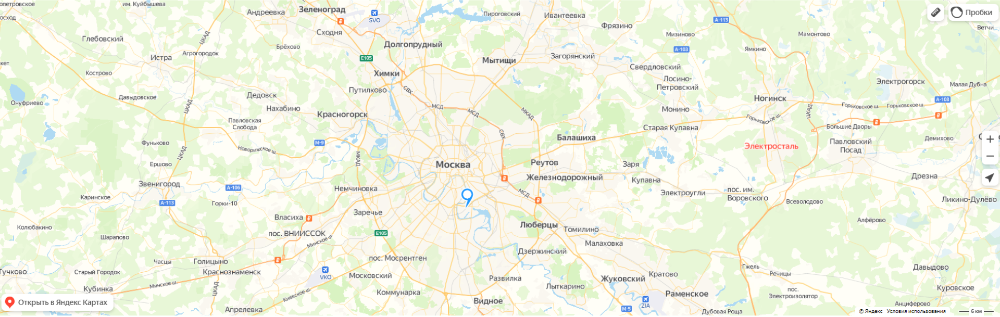

Снетково

РАСПОЛОЖЕНИЕ

СХЕМА ПРОЕЗДА
К КОМПЛЕКСУ УЧАСТКОВ ИЖС "СНЕТКОВО" МОЖНО ПРОЕХАТЬ СЛЕДУЮЩИМ МАРШРУТОМ:
- По Приозерскому шоссе до поселка Ларионово (120 км от съезда с КАД на Новоприозерское шоссе)
- В поселке Ларионово – поворот по указателю на Заостровье: с шоссе направо на Ладожскую улицу (дорога Ларионово – Моторное – Заостровье)
- Через 2,5 км слева от дороги – территория "Снетково"
-
Расположение
-

GPS - координаты
-
Расстояние до КАД